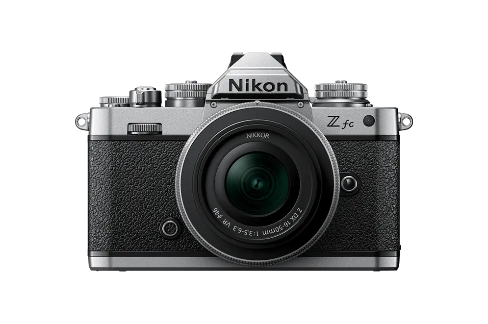
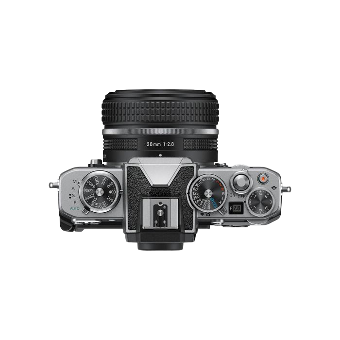
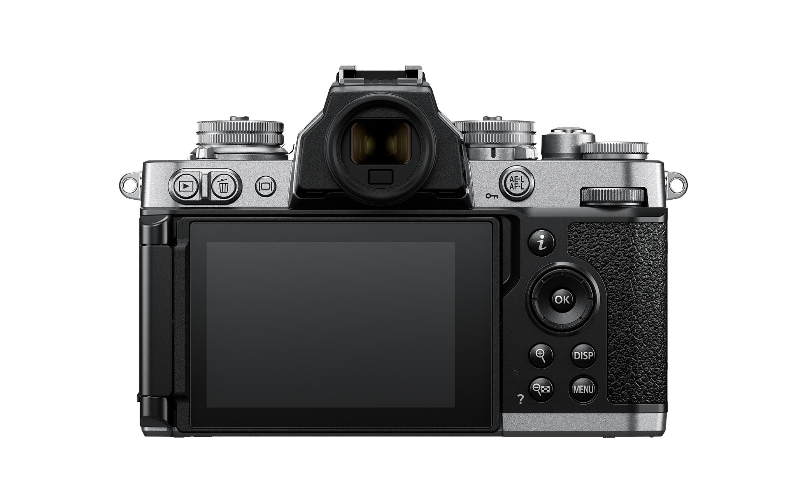
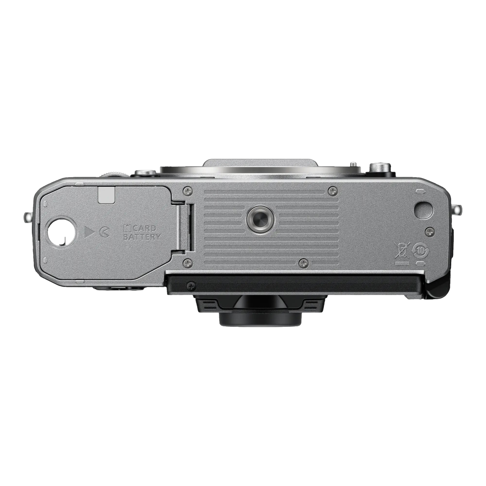

O Fotoaparatu
Nikon Zfc spaja klasični dizajn Nikonovih analognih fotoaparata s naprednom tehnologijom serije Z bez zrcala. Izrađen s preciznim mehaničkim brojčanicima za upravljanje i teksturiranim kućištem, ovaj model donosi poseban taktilni osjećaj pri svakom okidanju.
Bilo da snimate uličnu fotografiju, portrete ili kreirate multimedijski sadržaj za vloge, DX senzor i brz sustav autofokusa osigurat će besprijekornu oštrinu i bogate boje u svim uvjetima osvjetljenja.

Galerija detalja





Tehničke Karakteristike
Senzor
20.9 MP DX-Format CMOS
Procesor
EXPEED 6 pokretač slika
Video
4K UHD pri 30p bez izrezivanja
Zaslon
Zakretni dodirni LCD zaslon
Fotografirano s Nikon Zfc
Video
Komentari i recenzije
0 komentara